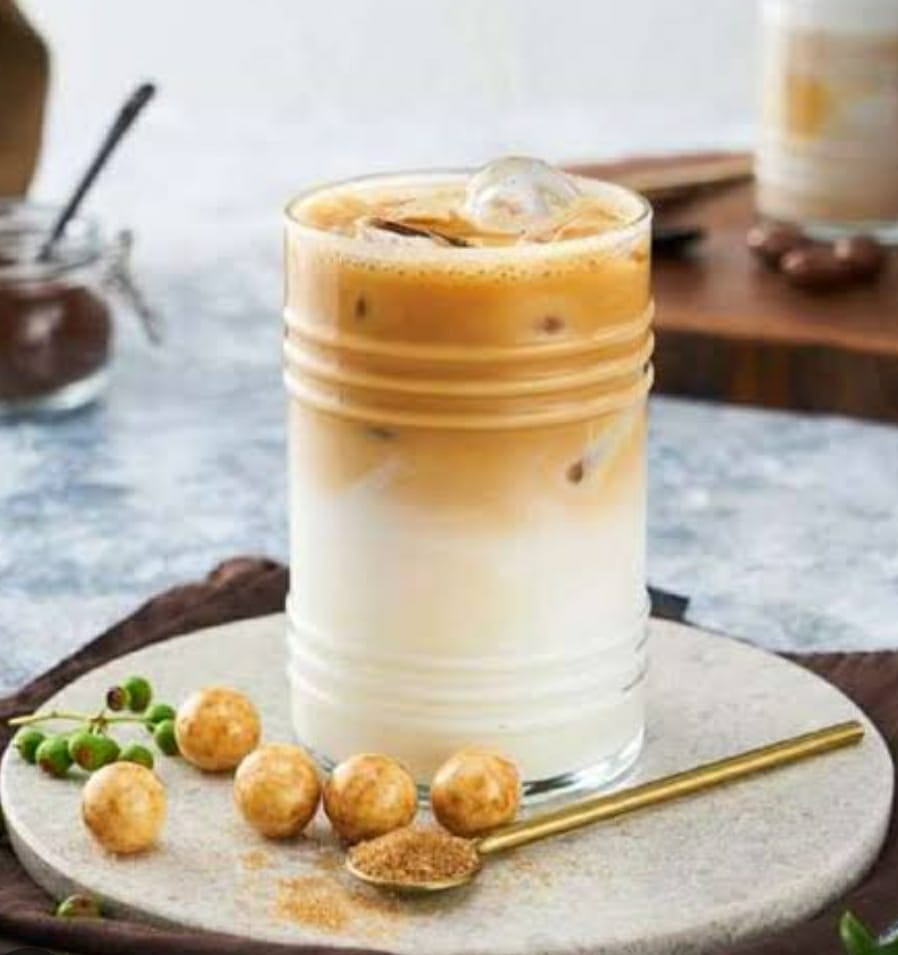

🧋Ice Latte Tarifi

Malzemeler📑
- 2 çay kaşığı granül kahve
- 100 ml sıcak su
- 350 ml soğuk süt
- 4-5 parça buz
- Şeker (isteğe göre)
YAPILIŞI🥣
- Granül kahveyi sıcak su ile çözdürün.
- Şeker kullanmak isteyenler bu aşamada eklesin.
- Kontrollü şekilde soğuk sütün yarısını ekleyelim.
- Parça kalindeki buzları da bardağımıza ekleyelim.
- Ve kalan soğuk sütümüzü ilave edelim.
Herşey tamam soğuk kahveniz içmeye hazır.AFİYET OLSUN🤗